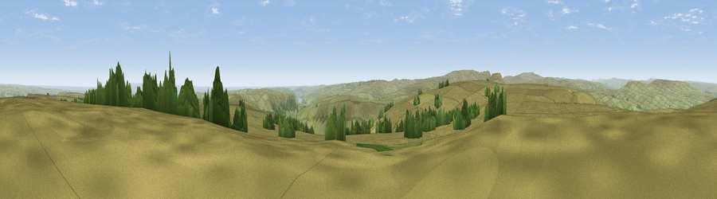

Great Haw
#7658 in England · top 8% of its area beats it · near West ScraftonThe view, rendered

A 360° render of this exact spot computed from the terrain model, tree cover and land cover — summer colours, afternoon light, calibrated against photographs of famous viewpoints. Real trees, hedges and buildings will differ in detail.
The panorama
Grey silhouette: terrain skyline in each direction (720 bearings, Earth curvature and refraction included). Dashed green: skyline with trees (+15 m) and buildings (+8 m) as obstacles. Blue strip: how far the ground is visible on each bearing.
Where the view opens
Wedge length = distance to the farthest visible ground on that bearing (vegetation-aware). Rings at 10, 25 and 50 km.
What fills the view
93% grassland · 4% woodland · 3% cropland
Angular shares of the visible panorama (visual magnitude), not map area. Landscape diversity 0.14 (0–1 Shannon).
Key numbers
More beautiful places nearby
The staircase of upgrades: each row has a higher view potential than everything closer. Driving times are estimates from straight-line distance, calibrated against real road routing — check an actual route before setting out.
| Place | Direction | Drive | Score |
|---|---|---|---|
| Little Haw | NNE · 1 km | ~3 min | 66.8 |
| Viewpoint near West Scrafton | ESE · 1 km | ~4 min | 68.8 |
| Viewpoint near Lofthouse | ESE · 2 km | ~6 min | 69.7 |
| Great Roova Crags | NNE · 3 km | ~8 min | 72.5 |
| Viewpoint c9553_8056 | WSW · 5 km | ~11 min | 74.9 |
| Viewpoint near West Witton | NNW · 8 km | ~16 min | 75.6 |
| Viewpoint near Kettlewell | WSW · 8 km | ~16 min | 76.6 |
| Viewpoint near East Witton | NE · 9 km | ~17 min | 77.8 |
54.20928, -1.88785 · source: osm peak · position refined by local search. Computed location — check access rights before visiting.